Go to
Navigate to a walkable area beside the selected platform.
ManiTaskGen: A Comprehensive Task Generator for Benchmarking and Improving Vision-Language Agents on Embodied Decision-Making
University of California San Diego, USA
*Equal contribution
Overview / Method walkthrough
Generate scene-grounded tasks to benchmark and improve embodied agents.
Task Generation Pipeline
Pipeline Overview
Starting from scene information, ManiTaskGen builds a receptacle-aware 3D scene graph and generates two complementary task types: process-based instructions that specify actions, and outcome-based instructions that specify desired scene states.
Step 1: Construct Receptacle-Aware 3D Scene Graph
Our scene graph represents both objects and the available placement regions around them. By recording support relations, spatial relations, and free space, it provides a structured basis for generating object relocation tasks.
Step 2: Generate Process- and Outcome-based Tasks
Process-based Tasks
Process-based tasks specify actions and their order. We sample object relocations from the scene graph and compose them into instructions with different spatial constraints and sequence lengths.
Outcome-based Tasks
Outcome-based tasks describe desired scene states, from clearing a surface to organizing a workspace. We instantiate 200 human-derived task templates with scene objects and use VLM voting to filter for feasibility.
ManiTaskOT-200 bears a tremendous variety of primary intents and semantic tags.
The following examples illustrate how outcome-based tasks translate high-level goals into concrete scene changes. Each card presents a task instruction, its primary intent and semantic / reasoning tags, and a comparison between the initial state and one valid outcome.
Tidy up the sofa_platform_0.
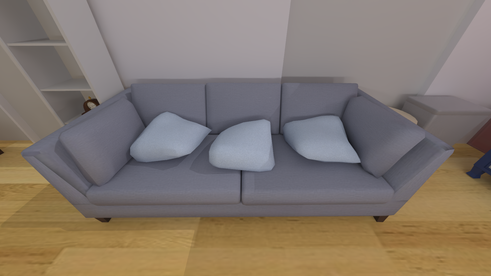
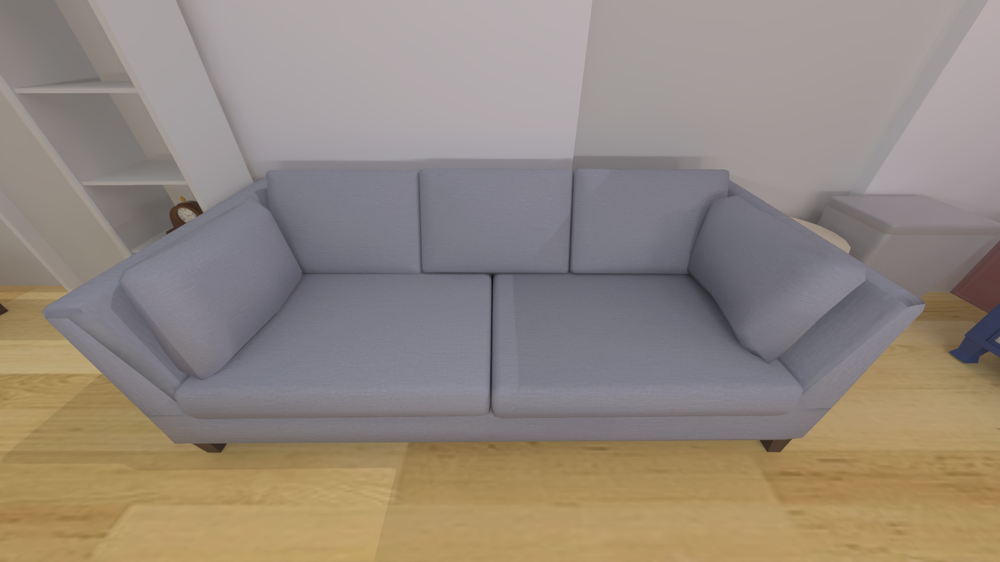
Arrange objects on wooden_table_platform_0 by height and type.
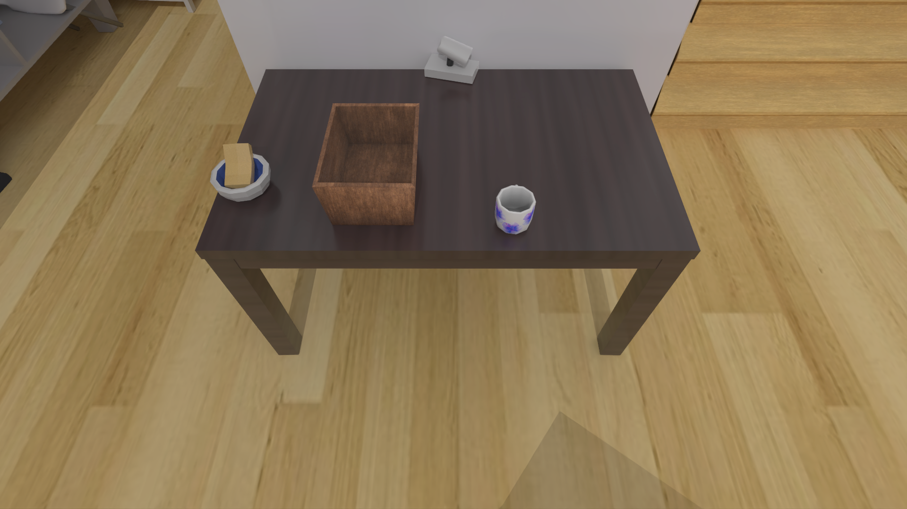
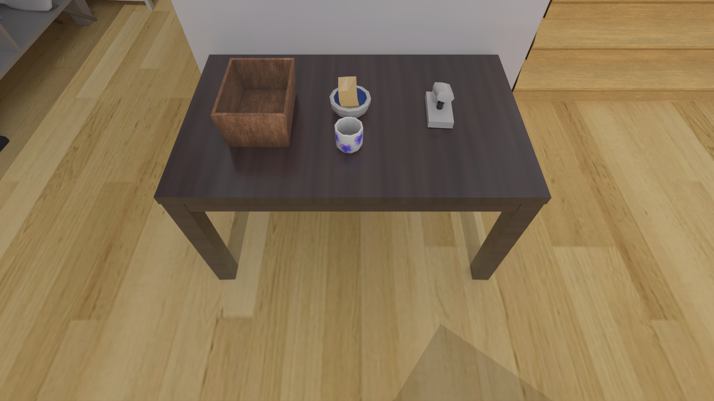
Transform the top of white_table_platform_0 into a "cityscape" by arranging objects to resemble buildings and roads.
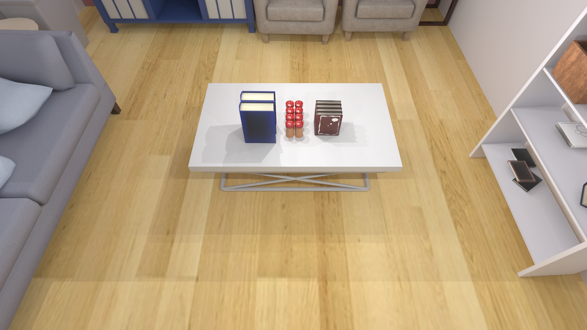
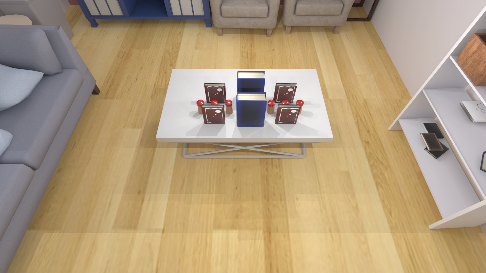
Remove all objects from kitchen_counter_platform_1 and organize them into distinct categories, placing related items together on tvstand_1.
kitchen_counter_platform_1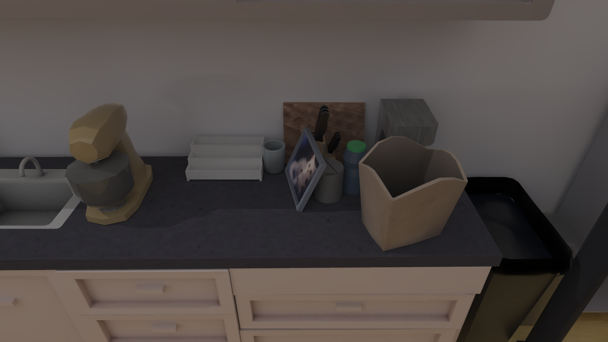
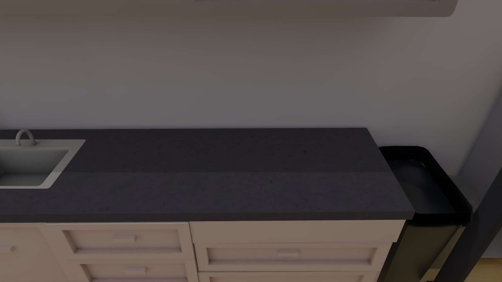
tvstand_1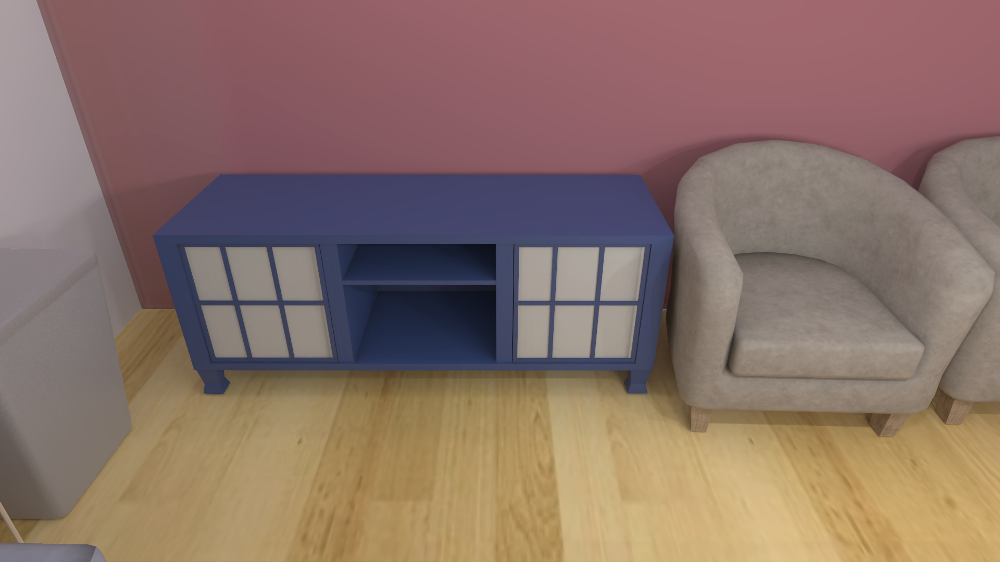
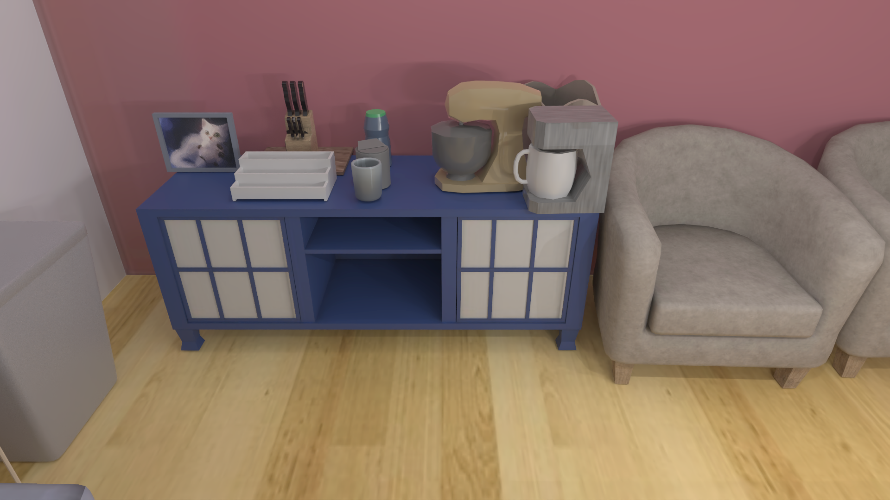
Each lightmap visualizes 100 sampled tasks from the same scene, with highlights marking referenced objects and locations. Compared with the GPT-based baseline, ManiTaskGen distributes tasks more broadly across the scene.
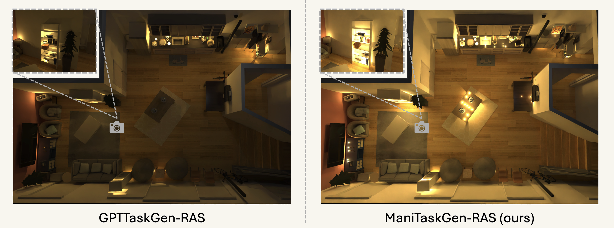
Task Quality
Human verification finds 94.0% of process-based tasks and 86.5% of outcome-based tasks valid. In a separate single-scene comparison, ManiTaskGen also achieves broader coverage of source and target platforms than the GPT-based baselines.
| Method | Validity (%) | Normalized entity coverage (%) | |||
|---|---|---|---|---|---|
| Source platform | Target platform | Moved object | Anchor object | ||
| GPTTaskGen | 29 | 47.2 | 48.8 | 45.6 | 42.5 |
| GPTTaskGen-SG | 68 | 42.2 | 41.7 | 73.2 | 71.3 |
| GPTTaskGen-SG-validated | 100 | 34.5 | 36.1 | 61.2 | 60.5 |
| ManiTaskGen | 94 | 85.4 | 87.3 | 72.9 | 70.9 |
ManiTaskGen Applications
Benchmarking VLM Agents on Embodied Decision-Making
At each step, the agent chooses an action from its visual observations. The clips show the six skills defined in Section 5.1.1. The terminal action, call_end, signals task completion and ends the episode for evaluation.
Navigate to a walkable area beside the selected platform.
Move to another available viewpoint around the current platform.
Grasp the object identified by its visible ID tag.
Reveal feasible placement regions associated with the selected object.
Place the held object in a randomly chosen feasible region.
Place the held object within the specified receptacle regions.
Task Difficulty and Evaluation Criteria
Levels 1–3 test single-step relocation with unique targets, object disambiguation, and two-step task completion; Level 4 tests outcome-based goals. Process-based tasks receive automatic success checks and intermediate scores, while outcome-based results, whose non-neglectable discrepancy was shown in our experiments, are primarily evaluated by humans and have no intermediate scores.
| Level | Example instruction | Success at CALL_END | Intermediate progress |
|---|---|---|---|
| 01 · Relocate | Move the box to table_01_platform_0. | Requested placement completed. | 25% per step |
| 02 · Disambiguate | Move the spice shaker between the two lamps. | Requested placement completed. | 25% per step |
| 03 · Sequence | Move the floral cup left of the navy blue hardcover book, then between the two lamps. | Both subtasks completed in order. | 25% ÷ number of subtasks per step |
Episode Examples
Place the paper towel holder between two lamps. Select a step to compare the recorded views before and after each action.
Action
Place the remote to the rear-left of the bowl. Gemini places it to the rear-right instead.
Action
Move kitchenware_white_paper_towel_holder between lighting_blue_base_table_lamp and lighting_blue_base_table_lamp
(Success Episode by Claude-3.7-sonnet)
Move Remote to Bowl's rear-left receptacles
(Failed Episode by Gemini-2.5-pro)
Benchmarking Results
The best-performing evaluated VLM achieves 40.3% average success across the four task levels, compared with 83.3% for humans. Multi-step and outcome-based tasks remain challenging even with a grounded skill interface.
| Agent | Level 1 | Level 2 | Level 3 | Level 4 | Average | ||||
|---|---|---|---|---|---|---|---|---|---|
| IP | SR (%) | IP | SR (%) | IP | SR (%) | SR (%) | IP | SR (%) | |
| Human | 96.0 | 82.5 | 95.0 | 80.5 | 95.0 | 80.0 | 90.0 | 95.3 | 83.3 |
| Random | 0.7 | 0.0 | 0.7 | 0.0 | 0.7 | 0.0 | 0.0 | 0.7 | 0.0 |
| GPT-5.2 [52] | 88.1 | 63.9 | 67.9 | 34.7 | 72.8 | 20.0 | 30.0 | 76.3 | 37.2 |
| GPT-4o [52] | 71.6 | 40.1 | 42.9 | 16.3 | 57.0 | 8.2 | 26.0 | 57.2 | 22.7 |
| GPT-4.1 [52] | 67.5 | 36.4 | 46.4 | 20.4 | 54.4 | 4.2 | 28.0 | 56.1 | 22.3 |
| GPT-4.1-mini [52] | 67.0 | 34.0 | 45.9 | 22.4 | 45.3 | 0.0 | 17.0 | 52.7 | 18.4 |
| Gemini-3.1-pro [53] | 87.3 | 65.1 | 54.6 | 24.5 | 75.3 | 22.2 | 33.0 | 72.4 | 36.2 |
| Gemini-2.5-pro [53] | 82.3 | 51.5 | 54.1 | 22.4 | 68.9 | 13.3 | 27.0 | 68.4 | 28.6 |
| Gemini-2.5-flash [53] | 75.0 | 40.3 | 40.8 | 14.3 | 56.0 | 4.1 | 25.0 | 57.3 | 20.9 |
| Claude-4.5-sonnet [54] | 88.5 | 69.3 | 64.9 | 36.7 | 71.4 | 20.0 | 35.0 | 74.9 | 40.3 |
| Claude-3.7-sonnet [54] | 73.9 | 45.7 | 55.6 | 28.6 | 54.7 | 8.9 | 28.0 | 61.4 | 27.8 |
| Claude-4.5-haiku [54] | 82.6 | 55.4 | 54.1 | 16.3 | 53.6 | 6.7 | 27.0 | 63.4 | 26.4 |
| Qwen-3-VL-235B-A22B-instruct [56] | 85.0 | 55.0 | 53.1 | 14.3 | 65.3 | 13.3 | 28.0 | 67.8 | 27.7 |
| Qwen-2.5-VL-72B-Ins [56] | 55.1 | 28.2 | 37.2 | 8.2 | 43.5 | 4.4 | 24.0 | 45.3 | 16.2 |
IP = intermediate progress; SR = success rate. Bold marks the best VLM score in each column.
An analysis of Gemini-2.5-pro on Level-3 tasks identifies incorrect placement as the most common failure. Navigation errors also become more frequent in the second subtask, highlighting difficulties in maintaining accurate decisions over longer sequences.
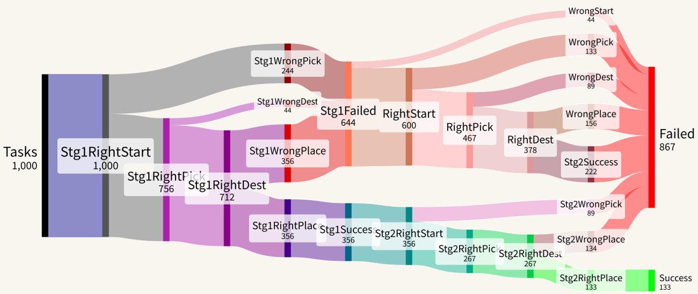
Teleoperated Real-Robot Evaluation
We apply ManiTaskGen to a reconstructed physical scene and evaluate VLM-generated high-level decisions on a mobile robot. Low-level navigation and manipulation are executed through human teleoperation.
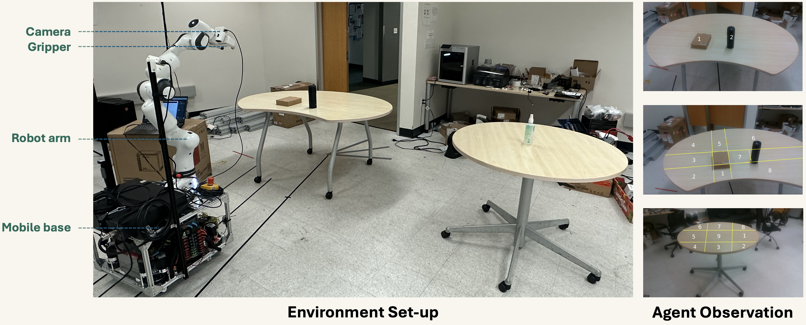
Improving VLM Agents
Beyond benchmarking, generated tasks provide feedback for improving agent decisions. We convert task outcomes and intermediate-step evaluations into a reflection memory that guides later attempts at inference time, without updating model weights.
Reflection memory built from 10 trial episodes improves performance on 100 Level-1 tasks in a different scene. Gemini-2.5-flash improves from 36% to 58% success, with gains also observed for GPT-4.1 and Claude-3.5-haiku.
| Agent | Intermediate progress | Success rate |
|---|---|---|
| GPT-4.1 | 75.5 → 79.4 | 38% → 49% |
| Gemini-2.5-flash | 79.4 → 81.7 | 36% → 58% |
| Claude-3.5-haiku | 68.9 → 79.4 | 36% → 51% |
Within the tested range, additional trial episodes further improve Gemini-2.5-flash’s success rate.
Citation
@inproceedings{dai2026manitaskgen,
title = {ManiTaskGen: A Comprehensive Task Generator for Benchmarking and Improving Vision-Language Agents on Embodied Decision-Making},
author = {Dai, Liu and Wang, Haina and Wan, Weikang and Su, Hao},
booktitle = {Advances in Neural Information Processing Systems},
year = {2026},
note = {Evaluations and Datasets Track. To appear},
url = {https://arxiv.org/abs/2505.20726}
}
This website was inspired by Kevin Zakka's and Brent Yi's and Nico Bohlinger's.


Paper
Code